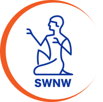

GitHub Pages
لم يبدأوصول موقع الداشبورد إلى الجهاز.

فحص ذكي لاتصال الداشبورد والخدمات مع شرح مبسّط لأي خطأ يظهر على هذا الجهاز والحل المقترح له.
آخر الأخطاء المكتشفة أثناء استخدام الموظف للداشبورد، وما إذا كانت ما زالت قائمة أو تم حلها.
انسخه وأرسله للدعم أو ضعه في الشات بدل إرسال صور متعددة.